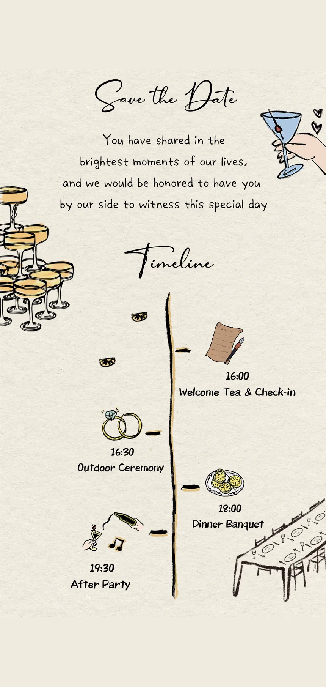
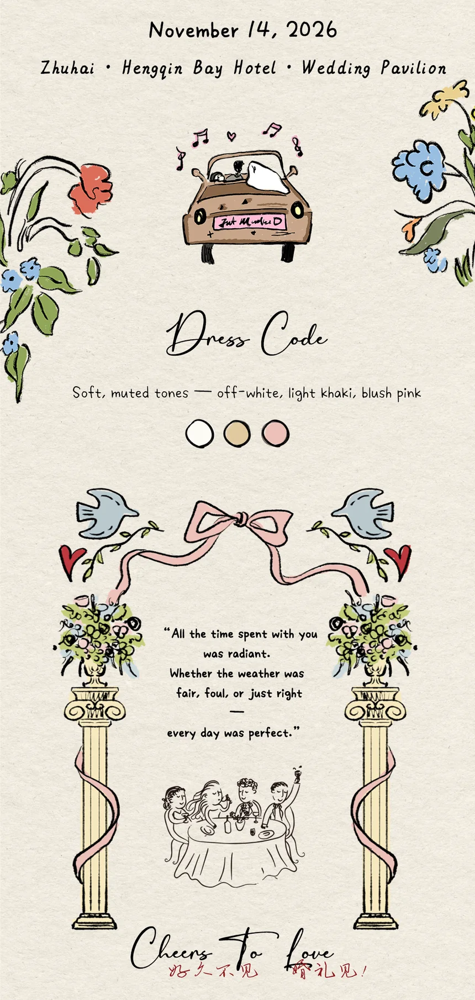

November 14, 2026
Zhuhai · Hengqin Bay Hotel · Wedding Pavilion
swipe up


See you there ♡
Your name
Will you be joining us?
How many of you? (including yourself)
Any allergies or dietary restrictions?